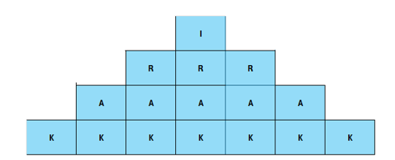
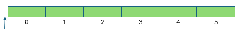
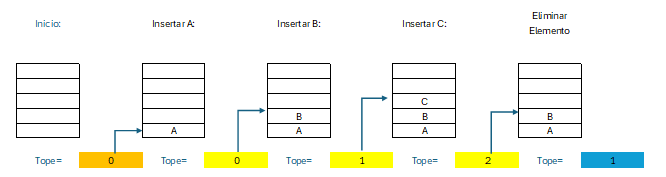

Instituto Politécnico Nacional
Unidad Profesional Interdisciplinaria de Ingeniería y Ciencias Sociales y Administrativas


Instituto Politécnico Nacional
Unidad Profesional Interdisciplinaria de Ingeniería y Ciencias Sociales y Administrativas
📌 Estructuras de datos dinámicas lineales
Las pilas son una estructura de datos dinámica lineal en la que los elementos se pueden insertar (añadir) o eliminar (suprimir) en un extremo determinado llamado TOPE.
También se conocen como LIFO (Last-In, First-Out): el último en entrar es el primero en salir. Las pilas utilizan una variable TOPE que representa el elemento superior de la pila.
Si la pila está vacía (No tiene elementos) TOPE = 0.
PILA[TOPE]: TOPE se incrementa en uno cada vez que se introduce un elemento y decrece si se saca un elemento.

📌 Representación gráfica de una pila
📌 PREGUNTA:
Utilizando una pila, ¿cómo sería la entrada? ¿Cómo sería la salida?
📝 PREGUNTA DE SECUENCIA:
¿Cuál es el resultado de la siguiente secuencia de acciones sobre una pila vacía?
push(5), push(10), top(), push(3), pop(), pop(), push(8), push(9), top()
📌 Resolución paso a paso:
🎯 RESULTADO FINAL: top() = 9
PUSH (insertar): Agrega un elemento a la pila en el extremo llamado tope.
POP (remover): Remueve el elemento de la pila que se encuentra en el extremo llamado tope.
Usando arreglos: Define un arreglo de una dimensión (vector) donde se almacenan los elementos.

📌 Arreglo de pila (celdas 0 a 5)
TOPE: Apunta hacia el elemento que se encuentra en el extremo de la pila.

📌 Estados de la pila durante inserciones y eliminaciones
insertar_push (int elem);
Verificar si la pila está llena
Si la pila está llena:
enviar mensaje de "Pila llena"
Si no:
se prepara a insertar, incrementando el tope de la pila
se inserta el elemento en la pila
{fin del condicional}
public void push (int elem) { if (this.llena()) { // ERROR: Pila llena System.out.println("Error: Pila llena"); } else { tope ++; pila[tope] = elem; } }
eliminar_pop ();
Verificar si la pila está vacía
Si la pila está vacía:
enviar mensaje de "Pila vacía"
Si no:
se respalda el elemento a eliminar
se decrementa el tope de la pila
se regresa el valor eliminado de la pila
{fin del condicional}
public int pop() { if (this.vacia()) { // ERROR: Pila vacía System.out.println("Error: Pila vacía"); return -1; } else { int x = pila[tope]; tope --; return x; } }

📌 Aplicaciones de pilas en programación
Una expresión aritmética contiene constantes, variables y operaciones con distintos niveles de precedencia.
Los operadores aparecen en medio de los operandos.
A + B, A – 1, E/F, A * C, A ^ B, A + B + C, A+B-C
El operador aparece antes de los operandos.
+ AB, - A1, / EF, * AC, ^ AB, + + AB C, - + AB C
El operador aparece al final de los operandos.
AB+, A1-, EF/, AC*, AB^, AB+C+, AB+C-

📌 Prioridad de operadores